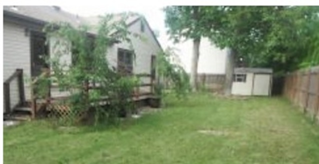
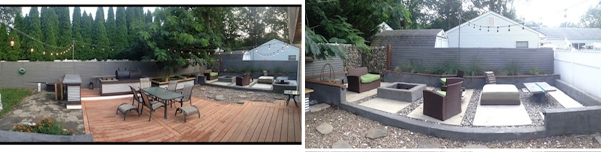

Menu
Home
Services
About
Contact
More
Testimonials
FAQ
Before & After Gallery
See the difference our work can make. Here are a few examples of projects showing the results:
 
Deck Repair & Staining
Leaky Faucet Replacement
Drywall Patch & Paint
Light Fixture & Ceiling Fan Installation